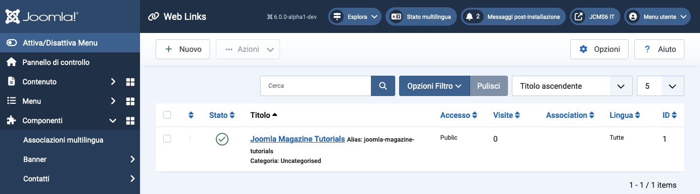

Joomla Help Screens
Collegamenti Web
Descrizione
Il componente Weblinks consente di gestire i collegamenti ad altri siti web e di organizzarli in categorie da visualizzare sul tuo sito. Facoltativamente puoi permettere ai visitatori di aggiungere nuovi collegamenti. Questo componente non è incluso in Joomla 4 o versioni successive, ma può essere ottenuto dal sito di download e installato come qualsiasi altra estensione.
Elementi Comuni
Alcuni elementi di questa pagina sono trattati in articoli di aiuto separati:
- Barre degli Strumenti.
- Filtri dell'Elenco.
- Intestazioni delle Colonne dell'Elenco.
- Ordinamento degli Elementi dell'Elenco.
- Paginazione dell'Elenco.
Come Accedere
Seleziona Componenti → Collegamenti Web → Collegamenti dal menu dell’Amministratore.
Screenshot

Tradotto da openai.com